Operating system - Windows 10 Home (x64)
Browser - Google Chrome 84.0.4147.105
Name:
Webiste tab screenshots does not apear after selecting IOS/Android tab and website tab again.Steps to reproduce:
Open "Kaip ištrinti anketą" topic in "Pagalbos centras". Select website tab, then IOS/Android tab and then again website tab.URL
Open URL containing the problem.GIF
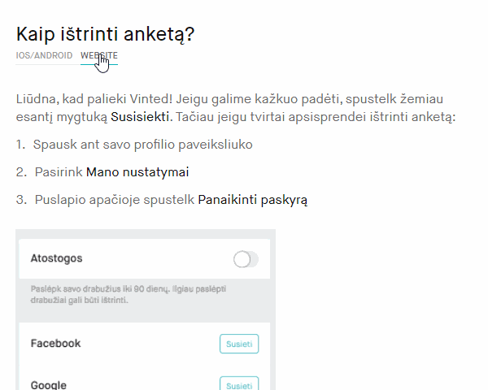Expected result:
Screenshots change back to the website tab screenshots.Actual result:
IOS/Android screenshots remain instead of website tab ones.Name:
Page not foundSteps to reproduce:
Open "Kaip siųsti prekę" topic in "Pagalbos centras". Open "Kainų skaičiuoklė" link.URL
Open URL containing the problem.Screenshots
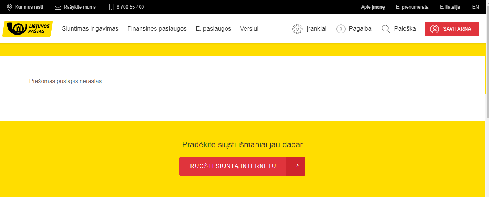Expected result:
Link leads to a website that contains price calculator.Actual result:
Link leads to a webiste that contains page not found warningName:
Previously used email address is considered as in use.Steps to reproduce:
Create an account in Vinted.lt and then delete that account.Summary:
Creating an account in Vinted.lt and deleting it results in a warning that account was deleted but right after this warning it is said that this email address is in use and asks to input a password. Also, it does not allow to create an account with the email address, which was deleted before.Screenshots
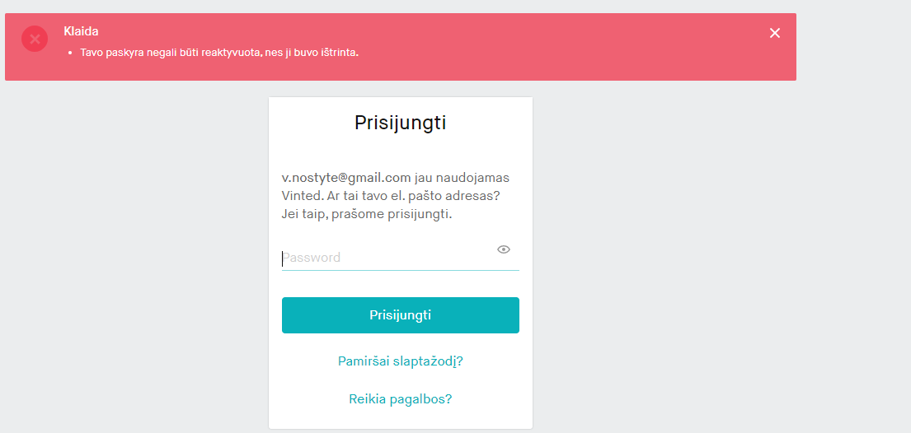 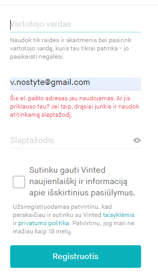Expected result:
Only deleted account warning showed and/or website allows to create an account with an email address which was used in the past.Actual result:
Warning that email address is in use and asks to login.Name:
Link "Vinted komanda neredaguoja ir nešalina atsiliepimų." and "automatinį atsiliepimą." leads to the beggining of the "Kaip palikti atsiliepimą" pageSteps to reproduce:
Open "Kaip palikti atsiliepimą?" topic in "Pagalbos centras". Open links "Vinted komanda neredaguoja ir nešalina atsiliepimų." and "automatinį atsiliepimą."URL
Open URL containing the problem.GIF
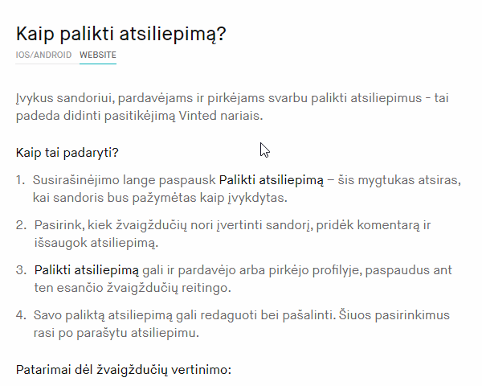Expected result:
Links are plain texts or lead to pages which contains information related to the links.Actual result:
Links lead to the beginning of the same page.Name:
IOS/Android / Website tabs appear in a "strange" place.Steps to reproduce:
Open "Kaip pakviesti draugus į Vinted?" topic in "Pagalbos centras". Tabs IOS/Android and Website are shown at the right side of the page title while in other pages these tabs are shown under the page title.URL
Open URL containing the problem.Screenshots
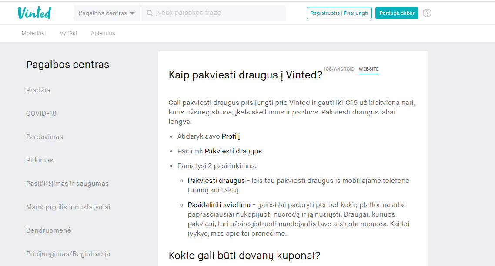Expected result:
Tabs IOS/Android and Website appear under the page title.Actual result:
Tabs IOS/Android and Website appear at the right side of the page title.Name:
Same paragraphs repeated twice.Summary:
Open "Kaip pakviesti draugus į Vinted?" topic in "Pagalbos centras". Paragraphs "Kokie gali būti dovanų kuponai?" and "Svarbu žinoti" are repeated twice. Also, last paragraph contains a bullet point without any text.URL
Open URL containing the problem.Screenshots
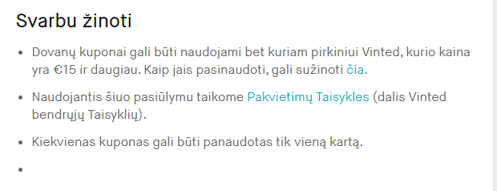Name:
Closing “Tęsti su Facebook” window results in page redirection to login page.Steps to reproduce:
Click on “Registruotis|Prisijungti” button then on “Tęsti su Facebook” button and close pop up window.GIF
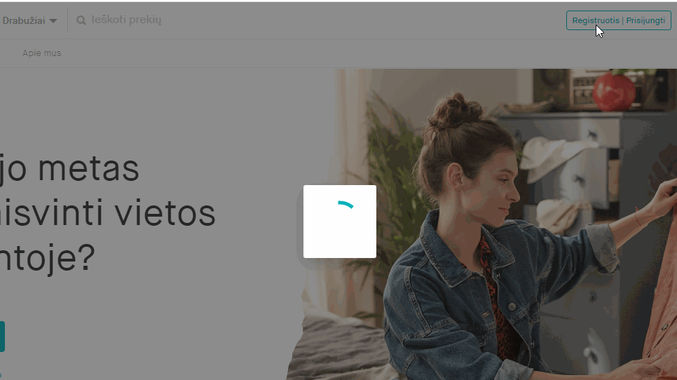Expected result:
Pop up window closes and user remains in the same page with “Registruotis|Prisijungti” pop up window open.Actual result:
Pop up windows closes and user is redirected to log in page.Name:
Button “Žiūrėti pavyzdį” does not contain a link.Steps to reproduce:
Open "Nustatymai" section in the "Apie mus" tab.URL
Open URL containing the problem.Expected result:
Button “Žiūrėti pavyzdį” gives user related information or redirects user to related page.Actual result:
Button “Žiūrėti pavyzdį” does not give user any information and does not redirect user to related page.Name:
Button „Tęsti su Apple“ appears with a big delay.Steps to reproduse:
Click on "Parduok dabar" button.Additional note:
Delay is bigger on Microsoft Edge 44.18362.449.0 than on Google Chrome 84.0.4147.105 browser.GIF (tested on Microsoft Edge browser)
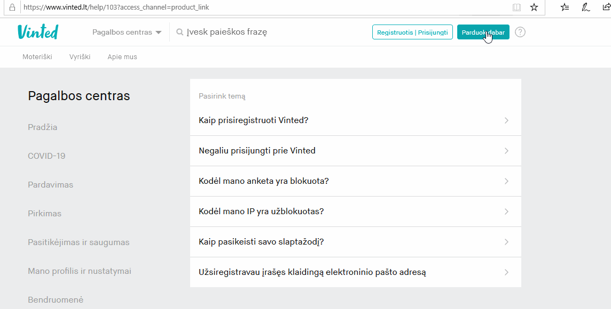Expected result:
Button shows with a delay.Actual result
Button shows right away with other buttons.Name:
No validation on email field.Steps to reproduce:
Open "Pamiršai slaptažodį?" link in "Prisijungti" section. Enter anything into an email field.URL
Open URL containing the problem.Screenshots
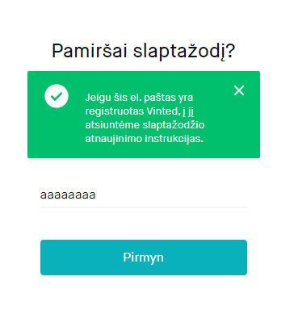Expected result:
Input field contains email validation.Actual result:
Input field does not contain email validation.Name:
Unnecessary "Išsaugoti" button.Steps to reproduce:
Open any clothes category and click on "Išsaugoti" button which is located in the right side of the search bar.Summary:
Category is saved with or without clicking on "Išsaugoti" button.Screenshots
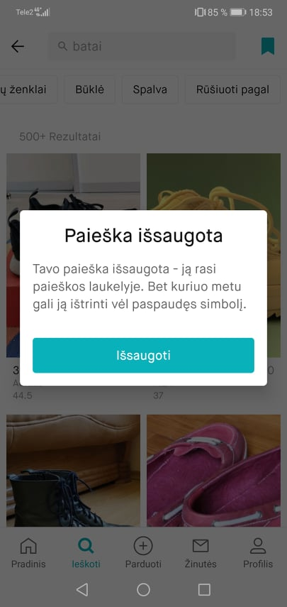Expected result:
Button "Išsaugoti" does not exist or category is saved only when button is pressed.Actual result:
Category is saved independently of this button.